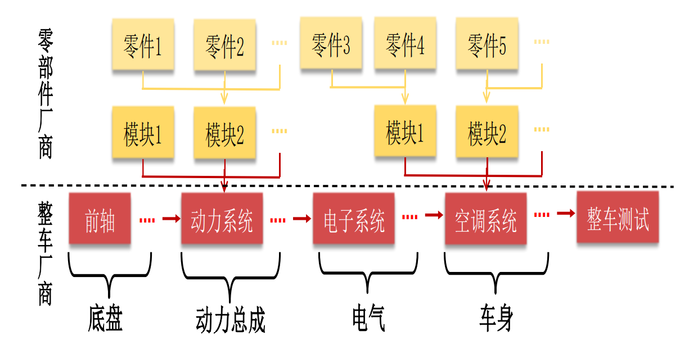

车联网安全基础知识之汽车模块化平台
车联网安全基础知识之汽车模块化平台
随着网络空间安全成为一级学科，各所大学纷纷开设信息安全相关专业，懂安全的人越来多。现在汽车安全现在也十分的热门，懂安全又懂汽车的人很少。做汽车安全研究需要掌握一些基础，之前零散的了解到一些汽车的概念，准备写一个系列总结一下之前掌握的一些基础概念。内容包括汽车平台、车辆结构（电子电气架构以及子网络的拆解、零部件分析）等。资料多来自网络，我以网络安全从业者的角度重新整理了一下，并加上了一些自己的看法。
此文是第一篇，汽车模块化平台。首先讲述模块化生产的诞生历程，然后介绍各大汽车集团推出的模块化平台。
模块化生产
汽车生产方式的 3 个阶段分别为流水线生产、平台化生产和模块化生产。
20 世纪 20 年代，福特公司率先采用了流水线生产方式，流水线生产方式是将货物放在输送线上，而每个工人在固定位置上 对货物进行加工，每人仅完成一个特定的工作，由于运输线较长，货物在运输过程中能够完成若干工艺操作。
20 世纪 80 年代，随着汽车产品生命周期缩短，1 条流水线只能生产 1 款车型的缺点逐 渐暴露，各大车企开始引入平台化生产。汽车平台在开发生产车型过程中，共享发动机技术、底盘技术等核心技术，部分标准化零部件在不同车型中通用，车身设计中使用相似的底盘、轴距等，使得同一平台能够开发生产同一级别的大部分车型。
随着汽车零部件通用性的不断提高，模块化生产逐渐进入大众视野。模块化产品是指可以独立设计， 功能独立的子系统，而在非模块化的产品结构中，零部件的功能与产品功能是多对多关系，某个零 部件的更改会影响产品整体功能。模块化生产中，不同零部件将集成为标准化模块，然后将各模块 进行多次组装便得到不同车型，传统的零部件厂商也不再提供单个零部件，而是根据整车厂商需求提供模块化系统。
| 生产方式 | 特点 |
|---|---|
| 流水线 | 1、批量生产 2、针对单一车型进行针对性研发 |
| 平台化 | 1、可生产同一级别不同车型 2、零部件标准化； 3、部分零部件和总成通用 4、技术共享，缩短研发时间和成本 |
| 模块化 | 1、可生产不同级别车型 2、更高的零部件和总成通用性 3、模块自由拼接 4、厂商主要提供模块化 |
模块化零部件和总成，简化生产流程，降低制造成本。平台研发结果共享，和供应商更多的早期研发参与，缩短了研发周期和降低研发成本。

汽车的供应链非常的长，涉及的软硬件供应商非常多。少量的车可以查询到核心供应商。如大众 ID4 电子系统的供应商如下。
| 零部件 | 供应商 |
|---|---|
| 操作系统 | 大众 VW.OS |
| 车联网应用 | 均联智行 |
| 整车控制器（VCU） | 大陆 |
| TBOX（OCU） | LG |
上表中的 OCU 是大众汽车的 TBOX，现在已经是第三代了。OCU 广泛应用在大众集团旗下品牌的各车型中。这就是模块化的典型案例，开发一个模块可以利用在各个车型之中。这样采用模块化设计加快了产品开发周期、降低了成本，各个汽车集团纷纷组建自己的模块平台。
各大车企旗下模块化平台
“造车平台” 最早由大众集团提出,并在后续产品中获得了巨大成功。在平台之上,诞生了模块化的生产与管理理念。由此,平台概念也成为了大众集团行销全球的重要基石。此后数年,多数国际造车集团,都进行了平台化的自我改造。直到丰田TNGA架构横空出世,在全球范围内,“架构造车”元年,才正式来临。
国内车企模块化平台
| 车企 | 模块化平台、架构 |
|---|---|
| 吉利/沃尔沃 | AMA、BMA、CMA、DMA、FE、KC、NL、PMA、SEA、SPA |
| 比亚迪 | e、BNA |
| 长安 | P1、P2、P3、P4、方舟、CHN、EPA0、EPA1、EPA2 |
| 上汽 | A架构（MIP）、SSA、SIGMA |
| 东风 | CMP、e-CMP、DF2 |
| 一汽 | FMA、FME、FEEA2.0 电子电气架构 |
| 广汽 | GPMA、GEP |
| 长城 | 柠檬、坦克、咖啡智能、小型 ME 平台、跨界车型、紧凑型、中大型以及大型 XEV 平台 |
| 奇瑞 | T1X、M1X、A3X、M3X、NEV、@LIFE、 |
| 北汽 | BMFA、BE21、BE22、IMC、魔方 |
注：加粗平台代表为纯电动平台。
吉利、沃尔沃
AMA——电动车平台：AMA平台是吉利集团将历时三年专门为新能源汽车打造全新平台。
BMA：由吉利汽车集团独立开发的全新的全球模块化体系结构，保持了早期吉利汽车集团和沃尔沃汽车共同开发的CMA –紧凑型模块化体系结构固有的高灵活性和可扩展性。BMA 架构可实现多级别、多类型车型的开发。这套架构主要研发的是 A0 到 A+ 级，包括SUV、轿车、CROSS 车型、wagon 和 MPV 等多种车型。目前吉利缤越，吉利缤瑞 和 ICON 均出自该架构。
- CMA ： 诞生于2016年10月19日在瑞典哥德堡CEVT（中欧汽车技术中心）， 由沃尔沃主导、吉利参与，二者共同开发的全新中级车基础模块架构，是面向全球工业 4.0 的产品诞生体。 CMA 针对中级车的基础架构。能够覆盖 A-B 级车型产品。适用于中小型汽车的高度灵活和可扩展的 CMA 架构将欧洲先进的研发理念与来自世界各地的尖端技术相结合。它已成为沃尔沃和 LYNK＆CO 产品以及最新吉利汽车产品的新基础。体系结构可扩展性很强，可以适应从紧凑型到中型的多种产品，以及轿车，掀背车，双门轿跑车，SUV，跨界车，SUV轿跑车等多种型号。沃尔沃 XC40、领克01、领克02、领克03、领克05、星越、星瑞 和 Polestar极星均诞生自CMA架构。
- DMA——中型SUV：DMA平台是根据吉利和沃尔沃联合研发的CMA平台基础打造的，将主要推出中级轿车和中级SUV车型。
FE——可扩展的紧凑型乘用车平台: 这是吉利汽车为A级紧凑车型打造的平台。这个高度灵活的平台提供了多种动力总成选项，高度的组件兼容性以及下一代电驱动解决方案。它是由吉利汽车公司开发的，并利用了沃尔沃汽车在安全性，机动性和耐用性方面的创新技术。目前帝豪GL、帝豪GS和新能源品牌——几何系列车型均出自该平台。
KC——中型乘用车平台: KC平台的开发由中欧车辆技术中心和吉利研究院共同完成，沃尔沃汽车公司提供了部分技术支持。该平台为吉利的中型高端车型（例如帝豪GT）提供了支撑。吉利博瑞也是出自该平台。
- NL——模块化SUV平台：开发此模块化 SUV 平台是为了满足智能驾驶和新能源等未来需求。它还为该平台上的汽车设定了安全性基准，在国家测试中创造了最高的安全性记录。在此平台上构建的吉利模型已经成为该品牌和业界最畅销的产品，例如帝豪X7 Sport，吉利博越等。
- SEA——浩瀚纯电动车平台: SEA 浩瀚架构是目前全球涉及最广的纯电架构，轴距范围从1800mm-3300mm，实现了从 A 级车到 E 级车的全尺寸覆盖，可满足轿车、SUV、MPV、小型城市车、跑车、皮卡及未来出行车辆等全部造型需求。SEA 浩瀚架构具备“硬件、软件和更广泛的集成能力”，并且这个平台已为先进的自动驾驶系统做好准备。上海车展上的豪华猎装轿跑——极氪001便是出自此平台。
- SPA: 这是沃尔沃自有的一个生产平台。
比亚迪
- e 平台：该平台提出“33111”的概念。“33111” 包括驱动电机三合一、高压控制器三合一、低压控制器多合一、一块动力电池和一块智能网联中控屏。比亚迪 e 平台是通过 “33111” 高度集成化设计来达到极限地压缩空间、从而更容易开发标准化模块的目的，最终形成标准化程度高的纯电动车平台。
- BNA架构：BNA架构由车身平台，动力平台、电子系统、生态系统等组成。其中车身就有BSP、BMP和BLP三个，分别对应小型、中型和大型车三种级别。
- DM-p 和DM-i动力平台: 动力平台有燃油、插混、纯电三种路线，其中插混车型由DM系列负责，既有主打动力性的DM-p平台，也有主打经济性的DM-i平台。
长安
- P1：小型车平台
- P2： 紧凑型车平台
- P3： 该平台是长安整个战略中最早的一个平台，也是最经典的一款平台，适用于中型轿车、加强型轿车、SUV、MPV。该平台下诞生了多款具有代表性的车型，比如逸动、CS75、锐程CC等。
- P4：中大型车平台
- 方舟：方舟架构作为长安汽车研发 4.0 时代的全新造车理念，方舟架构完整覆盖 A0级-C级的所有车型。方舟架构是以智能和大数据赋能车身、底盘等整车基础性能迭代进化，集高阶自动驾驶前置化布局、智慧成长型电子电气架构、不断精进的基础模块化平台。其中已经上市的 UNI-T 是基于该架构打造的首款车型。
- CHN： CHN平台是阿维塔科技（长安控股子公司）联合华为、宁德时代打造的架构，定位与生产全球领先自主可控高端纯电智能汽车品牌。CHN 其中 C 代表长安，H 代表华为，N 代表宁德。
- EPA0：EPA0 平台计划覆盖微型到小型车市场，主要打造双座两厢轿车以及小型两厢轿车两个品类，车长范围2700-4000mm，续航里程覆盖150-300km。
- EPA1：EPA1平台主要针对紧凑型市场，以私人家用和营运市场为目标，打造“高质量，高性价比”的经济实用及共享车型，并向上覆盖以“整车体验感及驾驶娱乐性”为卖点的中端私享车型，通过这个平台将延伸设计出紧凑型跨界风格轿车、紧凑型跨界SUV、紧凑型SUV以及紧凑型MPV四个产品种类。
- EPA2：PA2则是面对更高级别的车型，将覆盖中型及以上级别，打造私人专属伙伴，注重品质体验，追求品牌向上，产品主要是中型跨界风格轿车、中型轿车、高性能跨界SUV以及中型MPV四个品类。
上汽
A架构（MIP）： A架构平台首辆车型是荣威 i6。
SSA——SUV 平台：SSA(Scalable SUV Architecture)是上汽全球战略 SUV 架构平台，荣威和名爵旗下 SUV 以及新能源 SUV 产品均可在该平台打造，已经上市的名爵锐腾、 名爵 HS 以及荣威 RX5、荣威 RX5MAX 都出自该平台。
SIGMA 架构： SIGMA(SAIC Intelligence Global Modular Architecture) 架构是上汽全球模块化智能架构的英语缩写，读音同希腊字母”∑”—样。该架构就是未来上汽乘用车最重要的架构之一。SIGMA架构为横置发动机前驱设计，该模块化架构有着非常宽泛的轴距和轮距范围，覆盖车型级别很广，小到紧凑型轿车、小型 SUV，大到中大型轿车、SUV和MPV都可以基于此平台打造。该架构首款新车荣威 iMAX8 定位于中大型 MPV 市场。
东风
- CMP：CMP(COMMON MODULAR PLATFORM) 由东风集团与 PSA 集团合作研发的小型车平台，能够兼容传统燃油车型以及纯电动车型。
- e-CMP：e-CMP 是基于 CMP 开发的新能源平台，通过后轴向后移的方式以容纳电池组。
- DF2： 东风首款自主研发面向中高端车型的模块化平台，可适用于 C 至 D 级，涵盖SUV、Sedan、CROSS 以及 Wagon 和 MPV 等多种车型。
一汽
- FMA：无限方程 FMA 架构中:“F是一汽(FAW)、向前(Forward)、未来(Future)三个英文单词的首字母,表示一汽奔腾将继承一汽六十年的技术积淀,不断开发面向未来的前瞻技术;MA指模块化的架构。“无限方程” 表示可以快速地满足多样化的用户需求。车辆实现了从 A0 级,到 B 级车的百变空间;轴距适应能力,达到了从2630mm-2900mm的全覆盖;此外,FMA 架构还兼具轿车、SUV 等车型的拓展开发性;动力单元也包含了不同排量,以及混动在内的多种组合。
- FME：红旗汽车新平台，是指全新电动化智能网联技术平台，简称FME平台。
- FEEA2.0 电子电气架构：一汽为新时代智能网联汽车打造了自主化智能电子电气架构平台，代号 FEEA2.0。大量 ECU 被精简为新能源整车控制器、L3/L4 自动驾驶控制器、中央网关控制器这三大域控制器。此平台具备高智能、高安全、强网联、多场景四大特点。满足Level 3 级自动驾驶需求，同时可扩展满足 L4 级自动驾驶需求。从六大技术维度实现安全冗余，具备三级信息安全防护，支持全车 OTA 升级，拥有百兆带宽，并且支持 7 个典型场景的 V2X 功能。
广汽
- GPMA：GPMA(GAC Global Platform Modular Architecture) 包括R和L两个子平台，涵盖了轿车、SUV、MPV、PHEV、HEV等车型，是国内首个兼顾全球不同汽车市场需求的平台架构。首款车型EMPOW55。
- GEP： GEP (广汽纯电专属平台）围绕“全面电气化架构、以用户价值体验为中心” 两大核心理念开展设计和研发。GEP2.0平台将搭载包括“N合一”超融合动总架构、超10层绕线hair-pin技术等，电机最大效率超过97%。同时，其还应用高能量密度电芯、高集成无模组架构、高精度BMS控制、高容量电池包结构，全力打造四维能量高续航电池系统以及低于百公里12度电的超低电耗，并通过高压平台、大功率充电等先进技术，解决用户充电痛点。相继推出了 Aion s、Aion LX、Aion v等系列车型。
长城
柠檬：定位为全球化高智能模块化技术平台，它强调的是车辆的性能，以及更优异的车身结构，不仅覆盖SUV、轿车、MPV三大品类，还可适配燃油、混合动力、纯电动和氢燃料电池四种动力方案。第三代哈弗H6、大狗、初恋、赤兔等属于该平台打造。
坦克：定位为全球智能专业越野平台，基于非承载式车身架构打造。可涵盖B到D+级别的SUV和皮卡车型，其动力系统采用2.0T、3.0T两款GDIT发动机和中国首款纵置9AT变速器的组合。长城X炮、坦克300、坦克700、坦克800 等属于该平台打造。
咖啡智能：长城汽车整车智能化平台，涵盖智能座舱、智能驾驶和智能电子电气架构。相比于以上两个造车平台，它注重的是车辆智能化和交互体验的提升。WEY玛奇朵、WEY拿铁等属于该平台打造。
- 小型 ME 平台：ME平台是长城汽车通过正向研发打造的纯电动专属平台，该平台共拥有五大特征，包括长轴距大空间、电池布置在地板底部、整车操作平稳、高压电安全架构以及电子电气架构具备可扩展性和兼容性。欧拉白猫等属于该平台打造。长城汽车新能源战略规划将分为五大平台，另外四个平台为跨界车型平台、紧凑型(宝马合作平台)、中大型平台和大型 XEV 平台。
奇瑞
M1X：小型/紧凑型轿车
A3X：小型 SUV 平台
T1X： 紧凑型 SUV 车型，主要生产瑞虎系和捷途系等中低端 SUV。
M3X：紧凑型、中大型轿车与 SUV 平台
- NEV：纯电动平台
- @LIFE：@LIFE平台采用了世界首创的全铝型材框架车身，车身模块化则可灵活拓展车型，前后悬、轴距、轮距皆可调，可实现SD、SUV、MPV等多种车型拓展开发。同时，相比传统钣金车身，全铝材料的利用率更高。可搭载 95kw-360kw 多种功率的驱动系统，满足入门级和性能级车型需求，还可实现两驱、四驱、增程驱动、氢动力形式自由组合变化。采用自主研发打造的线控底盘，拥有通用的线控平台、标准化数据接口、加密安全验证机制、灵活可调整的功能集以及标准车规芯片和量产化的零部件状态。是一个全新的模块化可扩展平台，覆盖轿车、SUV、MPV、轿跑等多种车型，拥有绿色、智慧两大核心技术优势。首款车型为新能源纯电 SUV 蚂蚁。
北汽
BMFA：BEIJING “魔方”架构是北汽集团与德国合作伙伴联手打造的前驱车架构平台，实现了BEIJING汽车造车能力从开发到全面平台化自主研发的新阶段。BMFA平台是油电混动平台，覆盖 A0-A+ 级车型，车长覆盖4400mm-4950mm，采用全新电动化动力，动力性提升15%，燃油经济性提升25%，可实现L2-L3级自动驾驶。BEIJING-X7 是该平台下的首款量产车型。
BE21： BE21 是由北汽蓝谷和麦格纳联手打造的一款纯电动车专属平台。不同于传统油车平台以发动机动力总成为核心进行平台架构搭建设计，BE21平台是围绕三电系统来进行设计的。
BE22：E22 为纯电专属后置四驱平台，可生产轴距从 2700mm-3000mm 的车型，覆盖 A-C 级产品，NEDC工况续航范围达到400km-650km，并且可实现 ID-Pilot2.0 自动驾驶，并且预留自动驾驶至L4等级软硬件。
IMC：IMC 是北汽旗下高端子品牌 ARCFOX 推出的智能模块标准架构，IMC架构具有42个核心模块、127个功能模块，具备极强的拓展、智能、交互以及进化四个特点。在拓展层面，通过模块化的底盘和车身结构、标准化全气候电池包等，可满足从A0到C级车型全覆盖以及全系车型500-700km的续航里程；在智能层面，可实现 L3至 L4 等级以上自动驾驶技术；在交互方面，多模态情感交互系统可实现触摸、语音、人脸、手势、情绪多通道五感交互。此外，该平台还可进行 OTA 在线升级。
国外车企模块化平台
| 车企 | 模块化平台、架构 |
|---|---|
| 大众 | MQB、MLB、MSB、MMB、MEB、NSF、PPE、SSP |
| 丰田 | TNGA、e-TNGA |
| 福特 | CD6 |
| 雷诺日产联盟 | CMF、 CMF-EV |
| 宝马 | CLAR、 ULK |
| 奔驰 | MFA、MRA、MHA、MSA、MEA、EVA、MMA |
| 现代 | E-GMP、i-GMP、EVA、MMA |
| 通用 | VSS、Epsilon II、BEV3、ultium |
注：加粗平台代表为纯电动平台。
大众
MQB 横置发动机平台: 可生产不同动力系统的不同级别车型，动力系统模块包括传统 动力模块、电动模块和可再生能源模块三大类，车型覆盖 A00、A0、A、B 四个级别，目前已生产大众、奥迪、斯柯达等品牌车型。燃油车方面，MQB 平台推出奥迪系列（TT、全新 A1 等）、斯柯达系列等车型。插电混动车方面，MQB 推出途锐、迈腾、帕萨特等车型。电动车方面，MQB 推 出电动朗逸、电动高尔夫等。
MLB/MLB Evo 纵置发动机平台: 发动机是纵置的，几乎涵盖了奥迪 A4 以上所有车型，覆盖了 B、C、 D 级别车型。目前 MLB 平台已生产奥迪 Q5、Macan、辉昂、奥迪 A6L、奥迪 A7 等车型。
MSB 前置后驱平台: 是大众旗下保时捷的生产平台，涵盖了大众旗下几乎所有的顶级车 型。目前已生产宾利、保时捷等车型。
MMB 中置跑车平台: 是针对跑车所开发的中置发动机平台，在这个平台上的车型均为中置后驱或四驱的布局模式，该平台目前已生产保时捷 911、保时捷 922、保时捷 550 等超跑车型。
MHB 发动机后置小型车平台:适用于家庭用车等小型车，所生产的车型生产成本低，平台采用后 驱引擎零部件系统，该平台目前已被并入 MQB 平台，生产过奥迪 R4、奥迪 R8 等车型。
MEB 电气化平台:是大众最新打造的电气化平台，2019 年已投产 ID.3 系列车型，目前已发布多款 ID.家族系列车型。
NSF 小型车平台:是大众目前的小型车家族生产平台，目前该平台已生产 UP、奥迪 A2、Microvan、 斯柯达 Citigo、西雅特 Mii 等车型。
PPE 高端电动车平台: PPE（Premium Platform Electric）平台由奥迪与保时捷合作开发，未来在大众集团内将供给奥迪、保时捷、宾利等豪华品牌使用。
SSP 可扩展纯电平台： SSP(Scalable Systems Platform)平台是大众汽车集团的下一代机电一体化平台，是 MQB、MSB、MLB、MEB 和 PPE 平台的延续，它将 3 个燃油车平台和 2 个纯电动汽车平台整合为适用于集团旗下所有品牌和所有级别车型的机电一体化平台架构。集团计划从 2026 年开始在 SSP 平台上生产纯电动汽车。下一代 SSP 平台将是一个集纯电动、全面互联和高度可扩展性于一身的全新汽车平台。
丰田
- TNGA：“丰田新全球架构” 造车理念 TGNA(Toyota New Global Architecture,丰巢概念）是丰田生产理念的转变，从上至下地从企业体系、研发体系、生产体系、零部件体系对丰田内部以及合作供应商进行优化整合。平台分为 GA-B(紧凑型车架构)、GA-C(前驱小型车、紧凑型车)、GA-K(前驱中型车、中大型车)、GA-N(前置引擎后轮驱动车架平台)、GA-L(后驱中型车、中大型车)五个平台。TNGA 架构与模块化平台不同之处在于，TNGA 强调项目规划、产品设计、研发阶段、模块化生产为统一的整体，从整个环节提高零部件通用率,而整个目标立足于“制造更好的汽车”，从零起步改善进化每一个决定汽车基本性能的部件。
- e-TNGA：e-TNGA 是由 TNGA 衍生而来的电动化平台。
- DNGA：DNGA（Daihatsu New Global Architecture）属于小型车平台，主要是以轻型车、A 级车和 B 级车为主。
福特
- CD6：CD6 平台是 CD3、CD4 和 D4 平台的继承者，采用纵置后驱（或四驱）。
雷诺日产联盟
- CMF：CMF(Common Moudle Family) 日产C平台（奇骏、逍客等车型）、D平台（楼兰、天籁等车型）的更新平台，在全新的CMF平台中，汽车被分成五个模块，包括发动机舱、乘员舱、前部底盘、后部底盘以及电气架构。雷诺科雷嘉、日产逍客、日产轩逸、日产蓝鸟都出自这个平台。
- CMF-EV：CMF-EV 由法国和日本工程师组成的联合开发团队精心打造的，是一个多功能模块化平台，侧重于性能、灵活性和可靠性，适用于尺寸紧凑的轿车甚至 SUV，是雷诺日产三菱联盟全新一代纯电动车的基础构架。
宝马
- CLAR：CLAR(cluster architecture) 后驱平台,所有宝马旗下后驱底盘车型，都将出自这个平台。CLAR 平台最大的特点就是后驱和轻量化。代表车型宝马新 3 系、5 系、8 系、X3、X5、X7 等。
- ULK：UKL(Unter Klasse) 横置前驱平台，UKL 前驱平台最大的特点就是前驱和成本低。这套平台不仅囊括了MINI车型，目前还包括了宝马 1 系、2 系旅行、X1 等车型。
奔驰
- MFA：MFA((Modular Front Architecture) 平台是奔驰的横置发动机前驱模块化平台，目前 MFA 也可以匹配四驱系统。平台内主要车型有 A 级、B级、CLA 级、GLA 、GLB 等前驱车型。
- MRA：MRA(Modular Rear Architecture) 平台是奔驰的纵置发动机后驱模块化平台，车身采用钢铝混合架构，通过采用热成型钢、超高强度钢、铝合金等材料来减轻重量。平台内主要车型有 C 级、 E、S 系列等后驱车型。
- MHA：MHA(Mercedes High Architecture )奔驰大型SUV平台，平台内主要车型有 GLC、GLE。
- MSA：MSA(Modular Sports Architecture) 平台主要是超跑车型。代表车型 SL 级跑车。
- MEA：MEA(Modular Electric Architecture) 是奔驰的新能源专属平台。
现代
- E-GMP：E-GMP(Electric - Global Modular Platform) 是现代的电动汽车全球模块化平台，包括一个新的电力电气系统，该系统包括一个强大的电动机、一个新的EV变速器和集成在一个紧凑型包装中的逆变器。同时，电池组将会安装在前后轴之间。E-GMP平台将能够非常灵活地处理各种类型的汽车，从轿车、CUV到SUV。该平台还能被用于主流车型和高性能车辆。
- i-GMP：I-GMP(innovative - Global Modular architecture Platform) 包括了三个子平台，中小型（K）平台，中大型（N）平台和纯电动（EV）平台。北京现代第十代索纳塔（DN8c）是在中国首次应用此平台的国产车型。
通用
VSS：通用 VSS(Vehicle Set Strategy) 包括四个子平台，
VSS-F：前驱/四驱轿车平台，横置发动机。
VSS-R：后驱/四驱轿车平台，纵置发动机。
VSS-S：SUV 平台，横置发动机。
VSS-T：皮卡平台，纵置发动机。
Epsilon II：Epsilon 平台是通用公司的前驱中级车平台，推出的第一款车为欧宝 Insignia。
BEV3： 电动化平台，首款应用 BEV3 平台的车型是凯迪拉克全新的中型豪华跨界 SUV。
ultium：Ultium 纯电平台整合了通用26年的电气化研发经验，具备灵活、智能、安全三大特征。在2021上海车展上，基于Ultium平台打造的凯迪拉克 LYRIQ 概念车将迎来全球首次公开亮相。
stellantis(PSA/菲亚特)
- CMP：CMP(COMMON MODULAR PLATFORM) 由东风集团与 PSA 集团合作研发的小型车平台，能够兼容传统燃油车型以及纯电动车型。
- EMP2：EMP2 模块化平台，即 Efficient Modular Platform2(高效模块化2 平台)。EMP2整合了PF2与PF3平台的紧凑型车与中高级车。
- STLA SMALL： 适用于A/B/C 区间的车型，该车将基于 PSA 开发的 CMP 共用模块化平台打造，现在被称为STLA Small 小型平台，该平台是包括雪铁龙C4、标致2008、欧宝 Mokka 在内的一系列车型的基础平台。
- STLA MEDIUM： 适用于 C/D区间的车型，其实可以理解为当前的EMP2的车型，纯电续航里程将大于700公里
- STLA LARGE： 适用于D/E平台，可能拓展来自于EMP2 也可能是基于FCA Giorgio的平台。续航里程将大于800公里
- STLA FRAME： 这个基本是当前的皮卡和带车架的大型SUV 类型，基本是来自于FCA 续航里程将不少于500公里
斯巴鲁
- SGP： SGP(subaru global platform) 是斯巴鲁着眼于未来构筑的新一代汽车制造平台，其中整合了斯巴鲁安全、性能、舒适度等方面的一系列高端技术。采用水平对置发动机、左右对称全时四驱，X-mode 以及EyeSight驾驶辅助系统。斯巴鲁XV、森林人、傲虎等出自此平台。
写在最后
本文总结了国内外汽车集团的模块化平台，对汽车模块化建立宏观的认识，后面会对其中一家进行较为深入的解析。
最后要来解释一下为什么要写这篇文章。刚开始接触汽车安全就听同事讲 MBQ，当时是一脸懵逼，MBQ 是个啥？查了查发现是模块化平台，这一辆车我都没弄明白，这就要开始玩一些平台化的东西了。于是就放了一放，直到最近。渐渐的测试的车辆越来越多，接触到的概念也越来越多也更复杂。单纯的测试一辆车的安全性感觉就是一个工具人(来什么测什么)，这个过程中逐渐发觉需要找到一些共性的东西，其实这里有种供应链的概念在里面。现在的主机厂几乎都推出了自己的模块化平台，不少模块、软件在不同车型中复用。那么采用同一架构或同一组件的车辆研究方法和知识累积也可以复用，于是能够更高效的挖掘、定位以及修复漏洞。如若大众集团的 J949 OCU(TBOX) 存在安全漏洞， 则会影响到旗下的大多数车型。